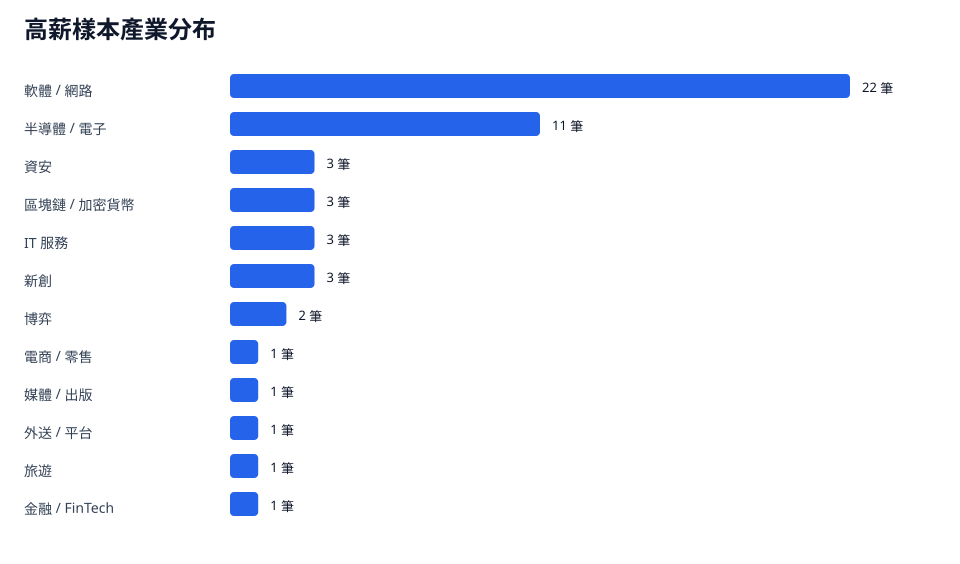
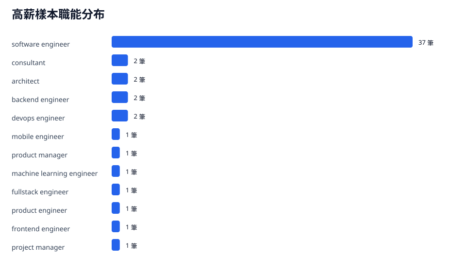

高薪樣本定義為年薪前 10%，門檻為 181.4 萬。此頁呈現高薪樣本的產業與職能分布。
樣本數52
月薪中位數16 萬
年薪中位數239 萬
Bonus 中位數2 個月
分析見解
- 高薪樣本共有 52 筆，年薪中位數為 239 萬；這是讀者評估高薪門檻的主要參考線。
- 產業分布以 軟體 / 網路 最多，共 22 筆；高薪職涯集中在產品型軟體、平台與高技術密度產業。
- 職能分布以 software engineer 最多，共 37 筆；工程師要進入高薪區間，核心能力是系統設計、商業影響力與跨團隊交付。

高薪樣本為年薪前 10%；產業分布用來定位高薪機會集中處。

職能分布顯示高薪樣本以 software engineer 為主，能力投資仍回到工程深度與交付影響力。
高薪樣本明細
| 匿名公司 | 產業 | 職能 | 年資 | 月薪 | Bonus | 年薪 |
|---|---|---|---|---|---|---|
| 公司 1 | IT 服務 | software engineer | 15 | 20.5 | 15 | 553.5 |
| 公司 2 | 軟體 / 網路 | software engineer | 7 | 20 | 15 | 540 |
| 公司 3 | 軟體 / 網路 | software engineer | 8 | 40 | 1 | 520 |
| 公司 4 | 半導體 / 電子 | software engineer | 26 | 29 | 2.5 | 420.5 |
| 公司 5 | 軟體 / 網路 | software engineer | 15 | 25 | 3 | 375 |
| 公司 6 | 軟體 / 網路 | software engineer | 5 | 26 | 2 | 364 |
| 公司 7 | 半導體 / 電子 | software engineer | 10 | 27 | 1.2 | 356.4 |
| 公司 8 | 軟體 / 網路 | software engineer | 14 | 25 | 2 | 350 |
| 公司 9 | 新創 | software engineer | 11 | 22 | 3.5 | 341 |
| 公司 10 | 博弈 | fullstack engineer | 6 | 7.2 | 35 | 338.4 |
| 公司 11 | 半導體 / 電子 | software engineer | 12 | 22 | 2 | 308 |
| 公司 12 | 半導體 / 電子 | software engineer | 10 | 21 | 2.4 | 302.4 |
| 公司 13 | 軟體 / 網路 | software engineer | 8 | 25 | 0 | 300 |
| 公司 14 | 區塊鏈 / 加密貨幣 | devops engineer | 3 | 25 | 300 | |
| 公司 15 | 博弈 | consultant | 13 | 16 | 6 | 288 |
| 公司 16 | 半導體 / 電子 | software engineer | 8 | 20 | 2 | 280 |
| 公司 17 | 軟體 / 網路 | software engineer | 10 | 19 | 2 | 266 |
| 公司 18 | 新創 | frontend engineer | 4 | 17.5 | 3 | 262.5 |
| 公司 19 | 半導體 / 電子 | software engineer | 0 | 10.7 | 12 | 256.8 |
| 公司 20 | 資安 | software engineer | 2 | 9.8 | 14 | 254.8 |
| 公司 21 | 軟體 / 網路 | architect | 10 | 21 | 0 | 252 |
| 公司 22 | 軟體 / 網路 | software engineer | 2.5 | 18 | 2 | 252 |
| 公司 23 | 軟體 / 網路 | software engineer | 5 | 18 | 2 | 252 |
| 公司 24 | 軟體 / 網路 | software engineer | 6 | 18 | 1.8 | 248.4 |
| 公司 25 | 軟體 / 網路 | architect | 10 | 20.5 | 0 | 246 |
| 公司 26 | 軟體 / 網路 | software engineer | 0 | 16 | 3 | 240 |
| 公司 27 | 軟體 / 網路 | software engineer | 4 | 17 | 2 | 238 |
| 公司 28 | 軟體 / 網路 | software engineer | 6 | 17 | 2 | 238 |
| 公司 29 | 軟體 / 網路 | software engineer | 7 | 17 | 2 | 238 |
| 公司 30 | 區塊鏈 / 加密貨幣 | devops engineer | 7 | 16.5 | 2 | 231 |
| 公司 31 | 旅遊 | software engineer | 2.5 | 15 | 3 | 225 |
| 公司 32 | 半導體 / 電子 | software engineer | 7 | 7.5 | 17 | 217.5 |
| 公司 33 | 外送 / 平台 | backend engineer | 6 | 16 | 1.5 | 216 |
| 公司 34 | 半導體 / 電子 | software engineer | 7 | 15 | 2.4 | 216 |
| 公司 35 | 半導體 / 電子 | product engineer | 3.5 | 15 | 2 | 210 |
| 公司 36 | 新創 | software engineer | 10 | 15 | 2 | 210 |
| 公司 37 | IT 服務 | software engineer | 6 | 7.8 | 14 | 202.8 |
| 公司 38 | 金融 / FinTech | software engineer | 1 | 12.5 | 4 | 200 |
| 公司 39 | 電商 / 零售 | software engineer | 7 | 16 | 0.26 | 196.16 |
| 公司 40 | 軟體 / 網路 | machine learning engineer | 5 | 14 | 2 | 196 |
| 公司 41 | IT 服務 | software engineer | 10 | 14 | 2 | 196 |
| 公司 42 | 媒體 / 出版 | product manager | 7 | 13 | 3 | 195 |
| 公司 43 | 半導體 / 電子 | software engineer | 9 | 15 | 1 | 195 |
| 公司 44 | 區塊鏈 / 加密貨幣 | mobile engineer | 5 | 16 | 0 | 192 |
| 公司 45 | 軟體 / 網路 | consultant | 9 | 14 | 1 | 182 |
| 公司 46 | 資安 | software engineer | 6 | 13 | 2 | 182 |
| 公司 47 | 軟體 / 網路 | backend engineer | 6 | 14 | 1 | 182 |
| 公司 48 | 資安 | software engineer | 8 | 13 | 2 | 182 |
| 公司 49 | 軟體 / 網路 | software engineer | 7 | 14 | 1 | 182 |
| 公司 50 | 軟體 / 網路 | project manager | 0 | 13 | 2 | 182 |
| 公司 51 | 軟體 / 網路 | software engineer | 0 | 13 | 2 | 182 |
| 公司 52 | 半導體 / 電子 | software engineer | 4 | 13 | 2 | 182 |